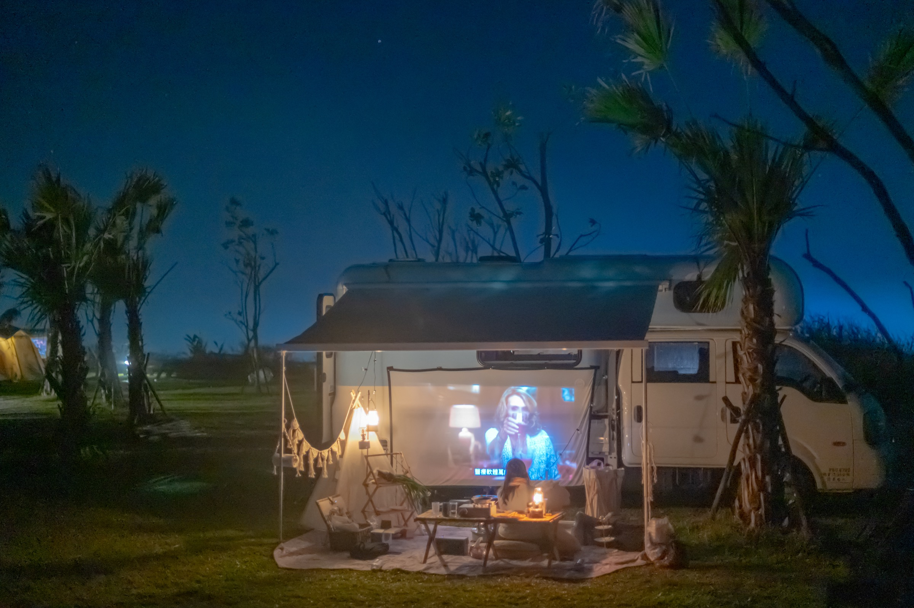

尺寸與乘坐
這台露營車車長約 5 公尺、車寬約 2 公尺、車高 3 公尺，採自排設計，小客車駕照即可駕駛，合法乘坐 6 人。若你正在比較台北露營車出租車型，這台屬於對新手相對友善、但仍需要注意限高與停車空間的露營車規格。
想了解這台台北露營車出租的空間與設備嗎？從車身尺寸、床位、衛浴、冷暖空調到發電機與戶外配件，這頁一次整理給你。
這台露營車以台北露營車出租服務為主，除了支援指定地點送車，也提供完整的車內生活設備，包含兩張雙人床、獨立衛浴、冷暖空調、冰箱、基本餐具與車邊帳，適合新手體驗露營車旅行，也適合親子與朋友小團體出遊。延伸閱讀： 露營車使用教學懶人包、 露營車出租價格解析、 親子露營車旅行。
露營車規格與露營車尺寸是取車前必看
這台露營車車長約 5 公尺、車寬約 2 公尺、車高 3 公尺，採自排設計，小客車駕照即可駕駛，合法乘坐 6 人。若你正在比較台北露營車出租車型，這台屬於對新手相對友善、但仍需要注意限高與停車空間的露營車規格。
開車與限高細節請見「露營車使用教學」的駕駛段落；此頁先協助你確認露營車尺寸是否符合行程路線。

露營車可睡幾人？先看床位配置
露營車床位配置為兩張雙人床，其中一組由餐桌區變換而成，整體適合 4～6 人使用。若是情侶、親子家庭或 4 位成人旅行，會是較舒服的睡眠配置。若以「露營車可睡幾人」來規劃，建議仍以實際乘坐與行李量為準。

露營車冷氣、冰箱與插座一次看懂

有衛浴的露營車，新手較安心
若你在找有衛浴的露營車，這台提供獨立廁所與冷熱水淋浴，並配置 110L 清水箱與沐浴備品。對親子與新手而言，能減少對公共浴廁的依賴，也更符合台北露營車租借常見的家庭需求。

露營車車邊帳與水電延伸配件

可接營區電的露營車設備與續航參考
若你在找有冷氣、有冰箱、可接營區電源的露營車出租，這台車提供 800Ah 電池系統，一般不長時間開冷氣的情況下可使用約 3 天；若持續開冷氣，約可使用 8～10 小時，亦可透過營區接電或露營車發電機補電。

實際操作請以「露營車使用教學」與現場交車說明為準。
看完露營車設備介紹，下一步這樣走
想確認露營車內部介紹以外的操作流程，請前往新手露營車設備操作教學；租賃條件則在 FAQ。